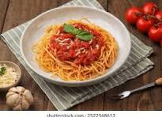

Pasta Recipe
Home

Una pasta sencilla y sabrosa, con una salsa ligera de tomate y ajo que se prepara en minutos.
Ingredients:
- 1 lb pasta
- 2 cloves garlic, minced
- 1/4 cup olive oil
- 1 can crushed tomatoes
- 1 tsp dried basil
- Salt and pepper to taste
Instructions:
- Cook pasta according to package directions.
- In a large skillet, heat olive oil over medium heat.
- Add minced garlic and sauté for 1 minute.
- Pour in crushed tomatoes and dried basil.
- Simmer for 10 minutes, stirring occasionally.
- Drain cooked pasta and toss with the sauce.
- Season with salt and pepper to taste.